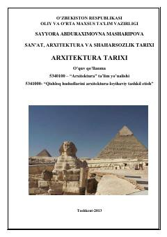

ATJahon arxitekturasi tarixi va me'morchilik uslublarining rivojlanish jarayoniga bag'ishlangan o'quv qo'llanma.
Mazkur o'quv qo'llanma ibtidoiy jamoa davridan boshlab jahon arxitekturasi tarixining shakllanish jarayonlari, me'morchilik uslublari va tarixiy obidalarni yoritadi. Qo'llanmada har bir davrning ijtimoiy tuzimi, iqtisodiyoti va iqlim sharoitining me'morchilikka ta'siri chuqur tahlil qilingan. Asar oliy va o'rta maxsus ta'lim muassasalarining arxitektura va dizayn yo'nalishlari talabalari uchun mo'ljallangan.